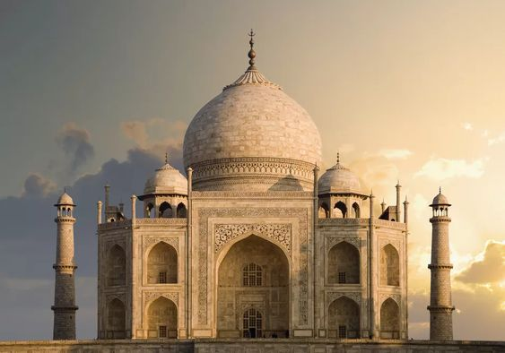

Famous Place In India

Taj Mahal
The Taj Mahal (/ˌtɑːdʒ məˈhɑːl, ˌtɑːʒ-/; lit. 'Crown of the Palace')[4][5][6] is an ivory-white marble mausoleum on the right bank of the river Yamuna in Agra, Uttar Pradesh, India. It was commissioned in 1631 by the fifth Mughal emperor, Shah Jahan (r. 1628–1658) to house the tomb of his favourite wife, Mumtaz Mahal; it also houses the tomb of Shah Jahan himself. The tomb is the centrepiece of a 17-hectare (42-acre) complex, which includes a mosque and a guest house, and is set in formal gardens bounded on three sides by a crenellated wall.
Construction of the mausoleum was essentially completed in 1643, but work continued on other phases of the project for another 10 years. The Taj Mahal complex is believed to have been completed in its entirety in 1653 at a cost estimated at the time to be around ₹32 million, which in 2020 would be approximately ₹70 billion (about US $1 billion). The construction project employed some 20,000 artisans under the guidance of a board of architects led by Ustad Ahmad Lahori, the emperor’s court architect. Various types of symbolism have been employed in the Taj to reflect natural beauty and divinity.

Hawa Mahal
The Hawa Mahal is a palace in the city of Jaipur, India. Built from red and pink sandstone, it is on the edge of the City Palace, Jaipur, and extends to the Zenana, or women's chambers.
The structure was built in 1799 by the Maharaja Sawai Pratap Singh, grandson of Maharaja Sawai Jai Singh, the founder of the city of [[jhunjhunu Rajasthan ].[1] He was so inspired by the unique structure of Khetri Mahal that he built this grand and historical palace.
It was designed by Lal Chand Ustad. Its five-floor exterior is akin to a honeycomb with its 953 small windows called Jharokhas decorated with intricate latticework.[2] The original intent of the lattice design was to allow royal ladies to observe everyday life and festivals celebrated in the street below without being seen. This architectural feature also allowed cool air from the Venturi effect to pass through, thus making the whole area more pleasant during the high temperatures in summer.[2][3][4] Many people see the Hawa Mahal from the street view and think it is the front of the palace, but it is the back.[5]

Amber Fort
Amer Fort or Amber Fort is a fort located in Amer, Rajasthan, India. Amer is a town with an area of 4 square kilometres (1.5 sq mi)[2] located 11 kilometres (6.8 mi) from Jaipur, the capital of Rajasthan. Located high on a hill, it is the principal tourist attraction in Jaipur.[3][4] Amer Fort is known for its artistic style elements. With its large ramparts and series of gates and cobbled paths, the fort overlooks Maota Lake,[4][5][6][7] which is the main source of water for the Amer Palace.
Amer Palace is great example of Rajput architecture. Some of its buildings and work have influence of Mughal architecture.[8][9][10] Constructed of red sandstone and marble, the attractive, opulent palace is laid out on four levels, each with a courtyard. It consists of the Diwan-e-Aam, or "Hall of Public Audience", the Diwan-e-Khas, or "Hall of Private Audience", the Sheesh Mahal (mirror palace), or Jai Mandir, and the Sukh Niwas where a cool climate is artificially created by winds that blow over a water cascade within the palace. Hence, the Amer Fort is also popularly known as the Amer Palace.[5] The palace was the residence of the Rajput Maharajas and their families. At the entrance to the palace near the fort's Ganesh Gate, there is a temple dedicated to Shila Devi, a Goddess of the Chaitanya cult, which was given to Raja Man Singh when he defeated the Raja of Jessore, Bengal in 1604. (Jessore is now in Bangladesh).[4][11][12] Raja Man Singh had 12 queens so he made 12 rooms, one for each Queen. Each room had a staircase connected to the King’s room but the Queens were not to go upstairs. Raja Jai Singh had only one queen so he built one room equal to three old queen’s rooms.

Agra Fort
The Agra Fort is a historical fort in the city of Agra, and also known as Agra's Red Fort. Built by the Mughal emperor Akbar in 1565 and completed in 1573, it served as the main residence of the rulers of the Mughal Dynasty until 1638, when the capital was shifted from Agra to Delhi. It was also known as the "Lal-Qila" or "Qila-i-Akbari".[1] Before capture by the British, the last Indian rulers to have occupied it were the Marathas. In 1983, the Agra fort was life inscribed as a UNESCO World Heritage Site.[2] It is about 2.5 km northwest of its more famous sister monument, the Taj Mahal. The fort can be more accurately described as a walled city. It was later renovated by Shah Jahan.
Like the rest of Agra, the history of Agra Fort prior to Mahmud Ghaznavi's invasion is unclear. However, in the 15th century, the Chauhan Rajputs occupied it. Soon after, Agra assumed the status of capital when Sikandar Lodi (AD 1487–1517) shifted his capital from Delhi and constructed a few buildings in the pre-existing fort at Agra. After the first battle of Panipat (AD 1526) Mughals captured the fort and ruled from it. In AD 1530, Humayun was crowned in it. The fort was given its present appearance during the reign of Akbar (AD 1556–1605). Later this fort was under the rule of Jats of Bharatpur for 13 years.

Red Fort
The Red Fort or Lal Qila (Hindustani: [laːl qiːlaː]) is a historic fort in the Old Delhi neighbourhood of Delhi, India, that historically served as the main residence of the Mughal emperors. Emperor Shah Jahan commissioned construction of the Red Fort on 12th May 1638, when he decided to shift his capital from Agra to Delhi. Originally red and white, its design is credited to architect Ustad Ahmad Lahori, who also constructed the Taj Mahal. The fort represents the peak in Mughal architecture under Shah Jahan and combines Persianate palace architecture with Indian traditions.
The fort was plundered of its artwork and jewels during Nader Shah's invasion of the Mughal Empire in 1739. Most of the fort's marble structures were subsequently demolished by the British following the Indian Rebellion of 1857. The fort's defensive walls were largely undamaged, and the fortress was subsequently used as a garrison.
On 15 August 1947, the first prime minister of India, Jawaharlal Nehru, raised the Indian flag above the Lahori Gate. Every year on India's Independence Day (15 August), the prime minister hoists the Indian tricolour flag at the fort's main gate and delivers a nationally broadcast speech from its ramparts.